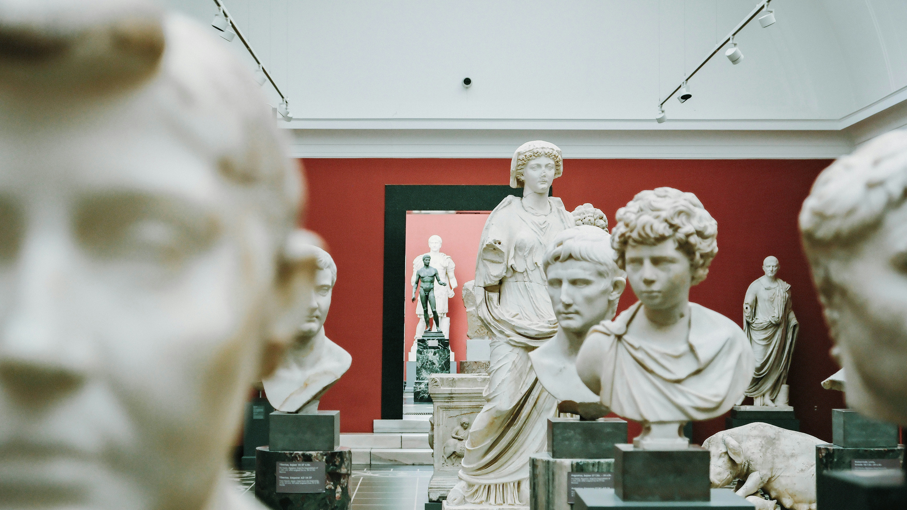
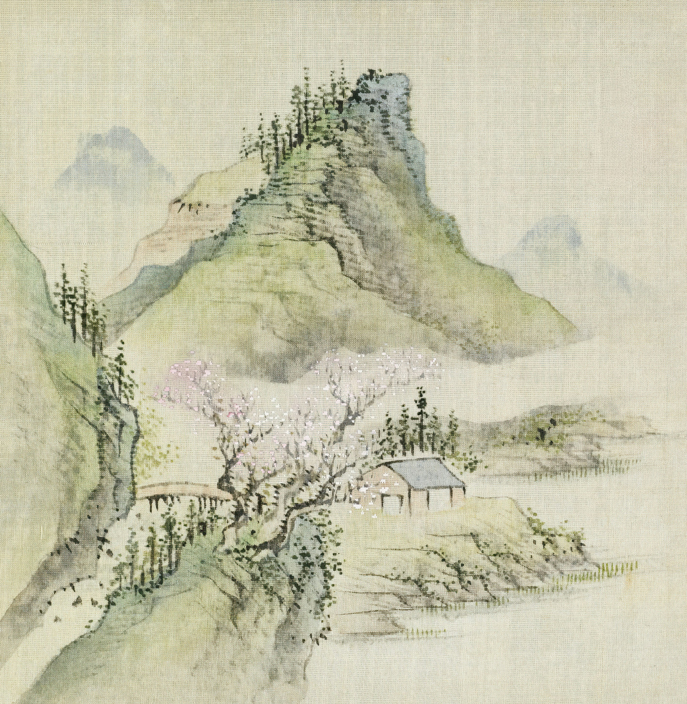
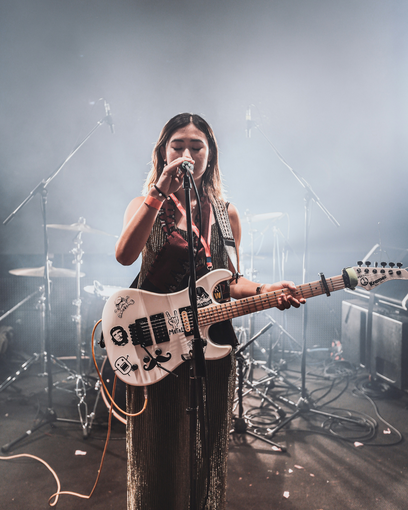
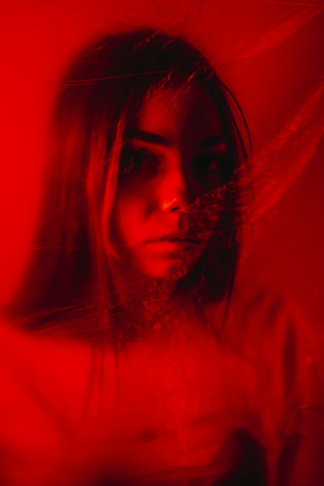
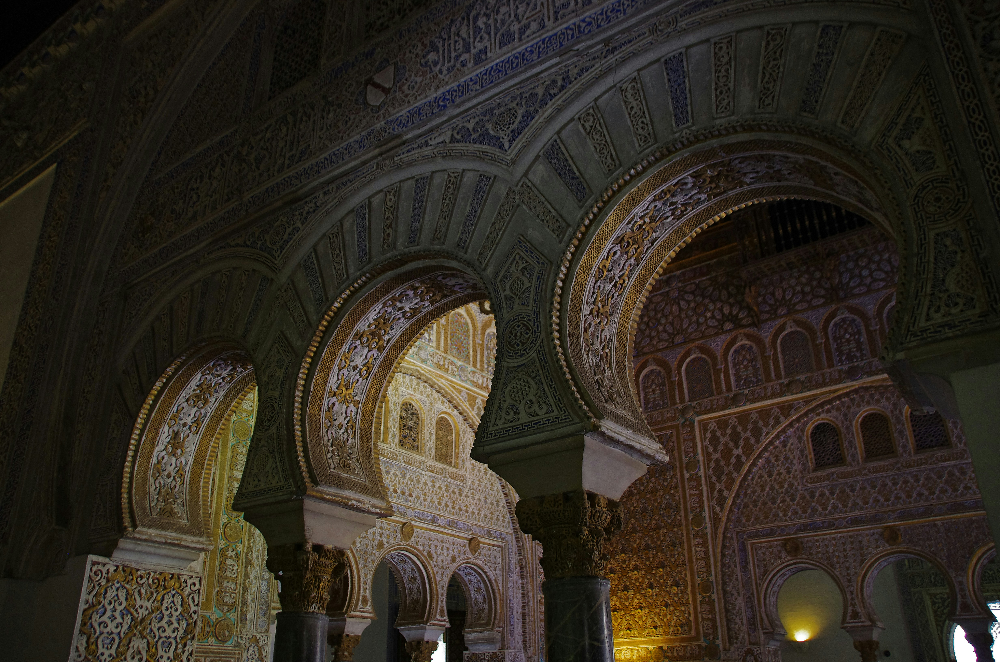
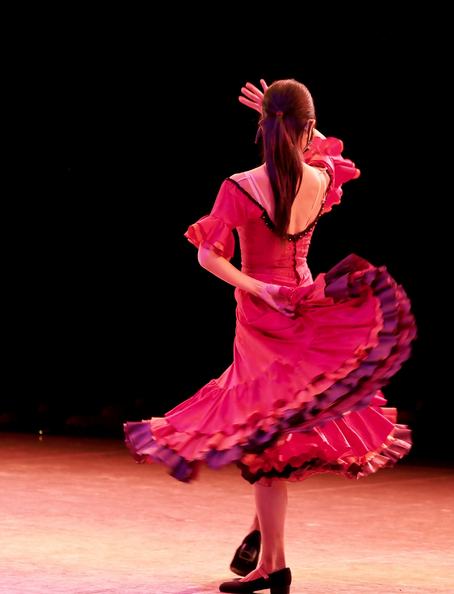
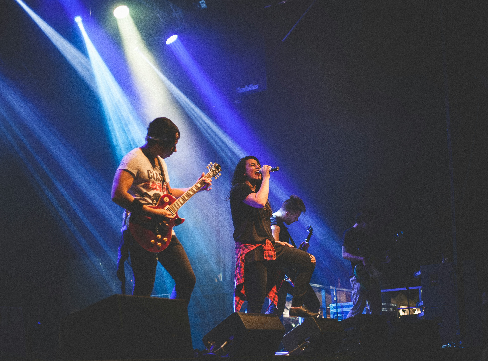

Concierto Las Petunias
Disfruta del concierto de Las Petunias, el trío de pop-punk que está revolucionando la escena madrileña con su actitud fresca, descarada e inconformista.
Música
Somos una plataforma dedicada a la difusión y promoción de la escena cultural, artística y musical. Nos esforzamos por conectar el talento emergente y los grandes aniversarios históricos con el público local y visitante.
Disfruta del concierto de Las Petunias, el trío de pop-punk que está revolucionando la escena madrileña con su actitud fresca, descarada e inconformista.
Música
El Museo de Bellas Artes de Sevilla acoge próximamente la gran exposición restrospectiva dedidaca al escultor Juan de Mesa con motivo del cuarto centenario de su muerte.
Arte
Una exposición de arte japonés de los siglos XVI al XIX.
Arte
TERE! es una artista queer de rock alternativo española. Su estilo está moldeado por artistas como Joan Jett, Olivia Rodrigo y Hayley Williams.
Música
Déjate atrapar por la obra maestra de Brian De Palma, basada en la célebre novela de Stephen King, y acompaña a Sissy Spacek en su inolvidable e impactante noche de graduación. Asegura tu entrada para una velada llena de nostalgia, tensión y poder psíquico.
Cine
Un espectáculo lumínico e inmersivo nocturno que se celebra en los históricos jardines y fachadas del Real Alcázar de Sevilla. Inspirado completamente en la célebre ópera Carmen de Georges Bizet
Arte
El Teatro Flamenco Triana ofrece este viernes a las 18:00 un formato de gala con artistas galardonados en festivales.
Música
Amor Líquido aterriza en Sevilla con un directo que empuja el pop hacia su lado más incómodo, visceral y honesto.
Música